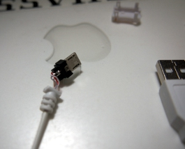
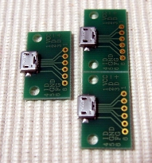
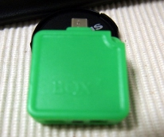
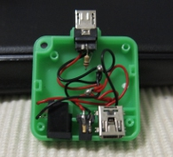
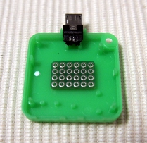
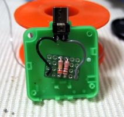
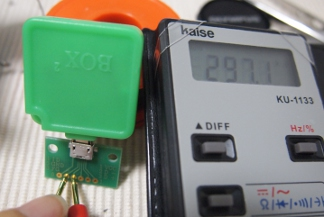

JIGを作ってみた（Jigの作り方）
この内容については無保証です。
下手したら文鎮になるかもしれないので真似するときは要注意。
一応Jig自体は海外通販で売っているみたいなので自信ない人はそっち買ったほうがよいかも。
（1000円くらいなので）
とりあえず、わかる人だけ参考にしてください。
Jig、、、、
これをGalaxyS（S２も）のUSB Microに挿すと強制的にダウンロードモードにしてしまうというなんとも怪しい代物です。
GalaxySは元々Home＋Power＋Volの通称「３ボタン起動」でダウンロードモードに移行できます
が、それすらダメな場合の緊急処置として使うことが出来ます。
CFWのインストール失敗、カーネルの書き込みミス、フラッシュROMの書き込みミス等などなど、、、、電源入れて３ボタンでもダウン
ロードモードにならないような文鎮目前のモノに対して効果を発揮する場合があります。
[用意するもの]
・はんだこて、はんだ
・テスター
・USB MicroBコネクタ（オス） １つ
・３００kΩ抵抗 １つ
・1kΩ抵抗 １つ
・配線(必要に応じて)
・スルーホース基板(必要に応じて)
・ケース(必要に応じて)
テスター持たないものは工作するべからずです。テスターは必ず用意しましょう。
（ショートは最悪の場合煙が出て文鎮化になりますので。。。）
抵抗に関しては、某スイッチングICの仕様を見る限りでは292k-316kΩまでの範囲ならOKみたい（多分抵抗の誤差を鑑みていると思
う）なので、300kΩ金皮1つでも通るかもしれません。
逆に100kΩ３つで構成するのは手間ですし、カーボンにすると誤差が心配なのでちょっとお勧めできません。
USB MicroBのコネクタは、なかなか見つからないかもしれません。
秋葉原でもコネクタそのものは売ってなくてジャンクを使うか、変換コネクタ系を分解するかくらいですね。
（まぁ売ってたとしても表面実装のものしかなくて工作にはちょっと不向きかもしれません）
充電オンリーの100円シリーズのを使う場合は特にですが、ケーブル線には必要な線（ID）が来ていない場合が殆どですので、コネクタの樹脂
を剥いて、信号線を丸出しにしないといけません。
100均のじゃなくても簡略化しているのが殆ど（４と５が結線されているとか）ですのでコネクタ樹脂は剥いでみましょう。
また、コネクタを剥き出しても本当にコネクタに信号が出ているか怪しい場合もあるので、組み立てる前にコネクタのチェックは欠かせません。
（気になる方は USBマイクロ 自作で検索すると色々出てきます）
一応これは105円でXperia用の充電・データ転送というものがあったので買って剥いでみたのがこんな感じでした。

これは幸運にも1、２，３，５がつながっておりまして、4はNC（どこにもつながってない）で綺麗な状態でした。
これは額面通りデータ転送にも使えますね。
というか剥ぎやすかったし空間が若干あったので、これで作ったほうが安く上がったかなぁと後悔。。
（また時間があったらチップ抵抗で作ってみようと思う）
で、こういったUSB MicroBメスの変換基板があれば確実にチェックできますので大変お勧めです。

800円で三枚入ってるので個人で使う分にはちょっと無駄ですけどね。
私の場合はカーボン抵抗で構成したので300k+1kです。（実測値297kΩ）
あと、綺麗に作りたかったのでわざわざ小さいスルーホース基板も使いました。100円です。
USB Micro Bオスはこいつ

を分解しました。ケースも使えて一石二鳥です。500円くらいでした。
なお、こいつのMicroBオスは3番だけが死んでいるという変わったものでした。
部品の値段ですが、安く上げようと思ったら、100均充電ケーブル＋抵抗２種類(300k+1kのカーボン)で10円＝110円で出来てしま
うと思います。
PETボトルの水一つ分です。
ただまぁこれはケースが無いので耐久性に問題ありですけどね。
[回路図]
色んなところに上がってますが、本当にたったこれだけです。
USB Micro
1 --
2 --
3 --
4 ---[301k]-+
5-----------+
ようするに４(ID)と５(GND)を301kΩで繋げるだけの簡単な工作ですね。
[こんな感じでつくりました]
私はこんな感じで作ってみました。
500円で買った怪しいBOX２を開けるとこんな風になってました

実はこれ、用途不明とかかかれてました。元々はNokiaの携帯で使う奴みたいです。
で、ここからMicroBオスだけを回収して、スルーホース基板に抵抗を半田付けして最終的にコネクタと基板を結線して

な感じとなりました。
で、ケースに仕舞って完成です。
やっぱりケースがあったほうがソレらしくてよいですね。
一応最後に全ての端子でショートしていないか、４と５番は範囲内に収まってるかどうかをテスターでテストしてみましょう。

OKですね。
次は時間があれば100均コネクタ＋チップ抵抗でつくってみたいかと思います。
[余談]
SGS2は、おでんなどでフラッシュを書いてしまうと思いっきりカウントされて改造品だと一目で判るような仕組みになっていますが、Jigを
使うと書き込み回数のカウントがリセットされて0になるそうです。
元々がFactoryMode
Bootなので、おそらく修理の人は似たようなJigを使って完全にリセットをかけてから専用ツールで書くのだと思います。
３ボタンリセットとは違うコードが走るようになっているのでしょうね。
[余談２]
まったくJIGと関係ないですが、USBのOTGケーブルを自作する場合は、４（ID）と５（GND）を結線してUSBA側の４番（GND）
とUSBMicroの４（ID）を結線する必要があります。
つまりMicro側の４と５、そして相手側の4を同じレベルにすればOKというわけです。
回路図で書くとこんな感じです。
USB
Micro
USB Normal
1 ------------------- 1
2 ------------------- 2
3 ------------------- 3
4 --+---------------- 4
5 --+
４（ID）を結線していなかったりするとOTG動作にはならす失敗しますので確認しましょう。